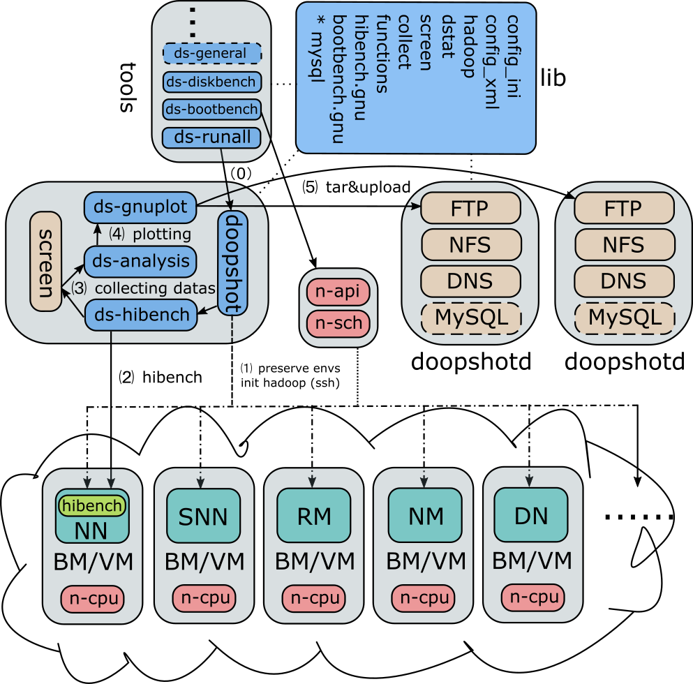

JetChars
Cloud Computing
AWS – Amazon Web Services
Data Pipeline
EMR – Managed Hadoop Framework
Ceph
Mesos
DCOS – One command control of data center services
bluedata
Terminologies
AWS – Amazon Web Services
Storage
Compute
Database
Commercial Case
Terms
Build VPN with AWS
What’s VPN
Deployment
PPTP VPN
Script for quick deployment
Docker
Why docker
Underlying Technologies
Getting started
Configuration files
Install Docker
Update Dockera
Docker users
Basic Commands
Container Management
Image Management
tricks
Dockerfile
Instructions
Caching
Network Management
libswarm
pipwork
container in kvm
CoreOS
Kubernetes
Issues
OpenStack
Nova
nova-docker
nova-rootwrap
Management
SecGroup
KeyPair
Flavor
Instances
Services
Heat
Horizon
Dependency
Congiure file
Refresh horizon
Cinder
Components
Storage backend
Configuation
work flow
create cinder volume
delete cinder volume
service management
Glance
Mete-data
Sahara
Neutron
Congiuration Files
Magnum
Developers
Launchpad bug status
Terminologies
Resources
KVM Optimization
Disk
Asynchronous IO
Disk Cache Mode
Storage Backend
Memory
Drop Memory Cache
HugePages
Check HugePage status
Enable 1GB HugePage
Anonymous HugePages (AHP)
Transparent HugePages(THP)
Network
MTU Size
Turn off NIC’s offloads
Improve Instance’s Launch Speed
DevStack
Quick Start
Executable files
Config files
Service List
Switches
Multi Host
Log
Neutron
Components
Network Node
Compute Nodes
Cinder
Dependency
Default Values
Nova
Configure file
Swift
Sahara
Post Script file
DevStack with DVR
Brief Intro
Configure Network Node
Configure Compute Node
DevStack Trouble Shooting
Pip
Python
Rabbit
MySQL
Apache
Other issues
After Installation
Restart n-cpu need passwd
OpenStack & Docker
Nova Docker
nstall docker&nova-docker
Install latest docker
Prepare Nova-Docker
Config local.conf
Testing Nova-Docker
copy the fileter
start a Container
Hadoop
Unlimit Non-root User’s Resources
crunch
CDAP
Issues
Hadoop Configuration Tuning
Rack Awareness
Assumption
Replica Placement
Creating New Block
Replicate Existing Block
Topology Script
Check whether rack awareness is enabled
Check hdfs topology info
Check replica placement
Hadoop Virtualization Extension(HVE)
HiBench - The Hadoop BenchMark Suit
What is HiBench?
BenchMark Types
Configuration & Running scripts
Default Configurations
DFSIOE
Sort
WordCount
k-means
DoopShot
Linux Disk
Filesystem
Kernnel – VFS
Driver
mke2fs
Devices
Storage Cards
Serial Devices
Network Storage
Mount
Mount a device
Unmount a device
Auto Mount
LVM – Logical volume management
Management
Check lvm infos
Issues
Loop Device
RAID
raid10
Disk Performance
dd – convert and copy a file
Documentation Tools
Sphinx - Python Document Generator
Configuration
Built-in themes
Issues
Pandoc - Universal document converter
Get System Infos
Intro
linux get system version info
For any os
For Ubuntu
For Centos
tar folder /etc
print infos
proc infos
Enviroments
Linux Network
Configurations
Home made proxy setting tool
Network Trouble Shooting
WebSite Errs
Ping
Check NIC
DNS management
bind – main stream dns server
dnsmasq
Route Management
IP commands
addr/address
link – network device
route – routing table management
netns – network namespace
rule – routing policy database management
Open vSwitch
macvlan
Terms
Linux Package Management
apt
yum
rpm
Applications
Check Install
Virtualization
Hypervisors
Libvirt
Virsh – Virtualization Management Interface
Docker
PXE – Preboot Execution Enviriment
Dependencies
DHCP-Server
tftp-Server
FTP-Server
Anaconda
kickstart
command section
other sections
Examples
Screen - Full-screen window manager
Command List
Commands out of screen
Commands inside screen
Shortcuts Keys
Configuration Files
Vim - My Favourite Editor
Commnd Mode
Move
Ex Mode
Set
fisa-vim-config – popular vim config file
Sublime Text
Open vSwitch
AMQP – Advanced Message Queuing Protocol
RabbitMQ
Mac as Main OS
ShortCuts
Issues
Cannot find bluetooth device
Softwares
Safari
PopClip – rightclick enhancement tool
brew – package management software
glims – safari enhancement
Visual Studio Code & ASP.NET 5
Other Good Softwares
Git – Extraordinary version contrl software
Configuration
Config – Get and set repository or global options
Git Proxy Command
Repository Management
Clone – Clone a repository into a new directory
Remote – Manage set of tracked repositories
Branch Management
Branch – List, create, or delete branches
Merge – Join two or more development histories together
Checkout – Checkout a branch or paths to the working tree
Submit
Add/rm – Add file contents to the index (stage files)
Reset – Reset current HEAD to the specified state (unstage files)
Push – Update remote refs along with associated objects
Review – The tool to submit code patches
Check Infos
Init a project
GitHub – Git repository hosting service
github.com
shortcuts
search engine
url customization
github.io – github pages
git.io – short addr service
Regular Expression
Intro
Basic Regular Express
grep – Globally search a Regular Expression and Print
awk – pattern-directed scanning and processing
Synopsis
Predefined variables
Examples
sed – stream editor
Synopsis
Functions
Examples
SQL – Structured Query Language
Grammar
Data Manipulation Language (DML)
INSERT
UPDATE
Data Definition Language (DDL)
CREATE
DROP
USE
DQL
DCL
MySQL
reStructured Text (rst)
Standard rST
Headings
Inline mark
Directives
Photos
SideBar
HTML
Sphinx Customized rST
Table of Content Tree (toctree)
Paragraph Mark
Code Block
Intersect Index
Download
Maths & Equttions w/ LaTeX
MarkDown (md)
Symbols
Gitbub Flavored
Scalable Vector Graphics (SVG)
InkScape
Shortcut keys
GIMP
Resources
Sort
heap sort
JetChars
Docs
»
DoopShot
View page source
DoopShot
¶
